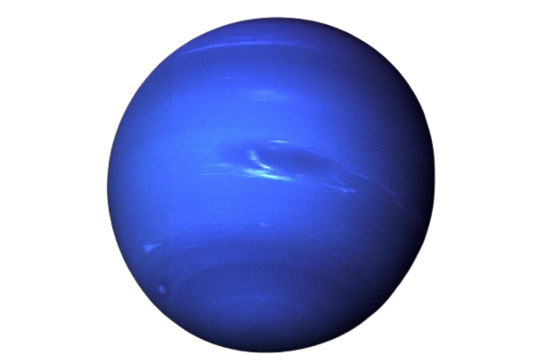

Matahari atau Surya adalah bintang di pusat tata surya. Bentuknya nyaris bulat dan terdiri dari plasma panas bercampur medan magnet.[27][28] Diameternya sekitar 1.392.684 km,[18] kira-kira 109 kali diameter Bumi, dan massanya (sekitar 2×1030 kilogram, 330.000 kali massa Bumi) mewakili kurang lebih 99,86 % massa total tata surya. Matahari merupakan benda langit terbesar di galaksi Bima Sakti yang besarnya bahkan 10 kali planet terbesar tata surya, Jupiter.
Bulan adalah satelit alami Bumi satu-satunya dan merupakan satelit terbesar kelima dalam Tata Surya. Bulan juga merupakan satelit alami terbesar di Tata Surya menurut ukuran planet yang diorbitnya, dengan diameter 27%, kepadatan 60%, dan massa 1⁄81 (1.23%) dari Bumi. Di antara satelit alami lainnya, Bulan adalah satelit terpadat kedua setelah Io, satelit Jupiter.


Merkurius merupakan planet terkecil di Tata Surya sekaligus yang terdekat dari Matahari. Periode revolusi planet ini merupakan yang terpendek dari semua planet di Tata Surya, yakni 87,79 hari. Seperti halnya Venus, Merkurius merupakan planet inferior yang letak orbitnya berada di sebelah dalam orbit Bumi, dan ketika diamati dari Bumi, jarak sudutnya dari Matahari tidak pernah melebihi 28°. Karena jarak yang dekat dengan Matahari, planet ini hanya dapat dilihat di dekat ufuk barat setelah matahari terbenam atau ufuk timur sebelum matahari terbit, atau biasanya ketika aram. Merkurius akan tampak seperti bintang yang terang jika diamati pada waktu tersebut, tetapi sering kali jauh lebih sulit untuk diamati daripada Venus. Jika diamati dari teleskop, Merkurius akan menampilkan serangkaian fase yang mirip dengan fase Venus dan Bulan, ketika bergerak di orbit bagian dalamnya yang relatif terhadap Bumi dan terjadi berulang dalam satu siklus sinodiknya, yakni sekitar 116 hari.

Venus adalah planet terdekat kedua dari Matahari setelah Merkurius. Planet ini mengorbit Matahari selama 224,7 hari Bumi. Venus tidak memiliki satelit alami dan dinamai dari dewi cinta dan kecantikan dalam mitologi Romawi. Setelah Bulan, planet ini merupakan objek alami tercerah di langit malam, dengan magnitudo tampak sebesar −4,6 yang cukup cerah untuk menghasilkan bayangan. Venus merupakan planet inferior dengan sudut elongasi yang mencapai 47,8°. Kecerahan maksimal planet ini dapat dilihat segera sebelum matahari terbit atau setelah matahari terbenam, sehingga disebut Bintang Fajar atau Bintang Senja.

Bumi adalah planet terdekat ketiga dari Matahari yang merupakan planet terpadat dan terbesar kelima dari delapan planet dalam Tata Surya. Bumi juga merupakan planet terbesar dari empat planet kebumian di Tata Surya. Bumi terkadang disebut dengan dunia atau "Planet Biru".
Bumi adalah tempat tinggal bagi jutaan makhluk hidup, termasuk manusia. Sumber daya mineral Bumi dan produk-produk biosfer lainnya bersumbangsih terhadap penyediaan sumber daya untuk mendukung populasi manusia global. Wilayah Bumi yang dihuni manusia dikelompokkan menjadi 200 negara berdaulat, yang saling berinteraksi satu sama lain melalui diplomasi, pelancongan, perdagangan, dan aksi militer.

Mars adalah planet terdekat keempat dari Matahari. Namanya diambil dari dewa perang Romawi, Mars. Planet ini sering dijuluki sebagai "planet merah" karena tampak dari jauh berwarna kemerah-kemerahan. Ini disebabkan oleh keberadaan besi(III) oksida di permukaan planet Mars. Mars adalah planet bebatuan dengan atmosfer yang tipis. Di permukaan Mars terdapat kawah, gunung berapi, lembah, gurun, dan tudung es. Periode rotasi dan siklus musim Mars mirip dengan Bumi. Di Mars berdiri Olympus Mons, gunung tertinggi di Tata Surya, dan Valles Marineris, lembah terbesar di Tata Surya. Selain itu, di belahan utara terdapat cekungan Borealis yang meliputi 40% permukaan Mars.
Lingkungan Mars lebih bersahabat bagi kehidupan dibandingkan keadaan planet Venus. Namun begitu, keadaannya tidak cukup ideal untuk manusia. Suhu udara yang cukup rendah dan tekanan udara yang rendah, ditambah dengan komposisi udara yang sebagian besar karbondioksida, menyebabkan manusia harus menggunakan alat bantu pernapasan jika ingin tinggal di sana. Misi-misi ke planet merah ini, sampai penghujung abad ke-20, belum menemukan jejak kehidupan di sana, meskipun yang amat sederhana.

Jupiter atau Musytari, terkadang secara tidak baku disebut sebagai Yupiter, adalah planet terdekat kelima dari Matahari setelah Merkurius, Venus, Bumi, dan Mars.Planet ini juga merupakan planet terbesar di Tata Surya. Jupiter merupakan raksasa gas dengan massa seperseribu massa Matahari dan dua setengah kali jumlah massa semua planet lain di Tata Surya. Planet ini dan raksasa gas lain di Tata Surya (yaitu Saturnus, Uranus, dan Neptunus) kadang-kadang disebut planet Jovian atau planet luar. Jupiter telah dikenal oleh para astronom sejak zaman kuno, dan dikaitkan dengan mitologi dan kepercayaan religius banyak peradaban. Bangsa Romawi menamai planet ini dari dewa Jupiter dalam mitologi Romawi. Saat diamati dari Bumi, magnitudo tampak Jupiter dapat mencapai −2,94, yang cukup terang untuk menghasilkan bayangan, dan juga menjadikannya objek tercerah ketiga di langit malam setelah Bulan dan Venus, walaupun Mars dapat menyaingi kecerahan Jupiter pada saat tertentu.

Saturnus (serapan dari bahasa Belanda: saturnus) atau zohal (serapan dari bahasa Arab: زØÙ„) adalah planet keenam dari Matahari dan merupakan planet terbesar kedua di Tata Surya setelah Jupiter. Saturnus juga merupakan sebuah raksasa gas yang memiliki perak rata-rata sekitar 9 kali radius rata-rata Bumi. Massa jenis rata-rata Saturnus hanya 1/8 massa jenis rata-rata Bumi, tetapi dengan volume yang lebih besar dari Bumi, massa Saturnus tercatat 95 kali massa Bumi. Saturnus dinamai menurut dewa kesejahteraan dan agribudaya dalam mitologi Yunani; simbol astronominya (♄) melambangkan sabit yang digunakan oleh dewa tersebut.
Saturnus terkenal dengan sistem cincinnya yang unik, yang sebagian besar terdiri dari partikel-partikel es dengan sedikit puing-puing batu dan debu. Setidaknya diketahui ada 82 satelit alami yang mengorbit Saturnus, 53 di antaranya telah menerima nama resmi; jumlah ini tidak termasuk ratusan satelit alami minor pada sistem cincinnya. Titan, satelit alami terbesar Saturnus dan satelit alami terbesar kedua di Tata Surya, memiliki diameter yang lebih besar dari Merkurius, tetapi massa Titan lebih kecil dari massa Merkurius. Titan juga merupakan satu-satunya satelit alami di Tata Surya yang memiliki atmosfer tebal.
Uranus (berasal dari nama Latin Ūranus untuk nama dewa Yunani Οὐρανός) adalah planet ketujuh dari Matahari. Uranus merupakan planet yang memiliki jari-jari terbesar ketiga sekaligus massa terbesar keempat di Tata Surya. Uranus juga merupakan satu-satunya planet yang namanya berasal dari tokoh dalam mitologi Yunani, dari versi Latinisasi nama dewa langit Yunani Ouranos. Komposisi Uranus serupa dengan Neptunus, dan keduanya mempunyai komposisi kimiawi yang berbeda dari raksasa gas yang lebih besar, Jupiter dan Saturnus. Karenanya, para astronom sering menempatkan Uranus dan Neptunus dalam kategori "raksasa es" untuk membedakan keduanya dari raksasa gas. Atmosfer Uranus serupa dengan Jupiter dan Saturnus karena kandungan utamanya adalah hidrogen dan helium, tetapi mengandung lebih banyak unsur "es" seperti air, amonia dan metana, bersama dengan sisa hidrokarbon. Atmosfer Uranus merupakan atmosfer planet terdingin di Tata Surya, dengan suhu terendah mencapai 49 K (−224 °C; −371 °F). Atmosfer Uranus mempunyai struktur awan berlapis-lapis dan kompleks, serta diperkirakan lapisan awan terendahnya terdiri atas air dan lapisan awan tertingginya terdiri atas metana. Bagian dalam Uranus sebagian besar terdiri atas es dan bebatuan.

Neptunus merupakan planet terjauh (kedelapan) jika ditinjau dari Matahari. Planet ini dinamai dari dewa lautan Romawi. Neptunus merupakan planet terbesar keempat berdasarkan diameter (49.530 km) dan terbesar ketiga berdasarkan massa. Massa Neptunus tercatat 17 kali lebih besar daripada Bumi, dan sedikit lebih kecil daripada Uranus. Neptunus mengorbit Matahari pada jarak 30,1 sa atau sekitar 4.450 juta km. Periode rotasi planet ini adalah 16,1 jam, sedangkan periode revolusinya adalah 164,8 tahun. Simbol astronomisnya adalah ♆, yang merupakan trisula dewa Neptunus.
Meteorit adalah sisa-sisa objek meteor, yang berasal dari meteoroid, komet, dan asteroid di luar angkasa, yang tidak habis terbakar dan berhasil mencapai permukaan Bumi. Objek-objek tersebut yang menjadi meteor ketika masuk ke atmosfer Bumi terkadang tidak terbakar sampai habis dan jatuh ke permukaan Bumi sebagai meteorit. Ketika objek-objek meteor berukuran cukup besar sehingga disebut "bolide" jatuh ke permukaan Bumi, kawah tumbukan yang berdiameter sebesar beberapa kilometer dapat terbentuk dan meteorit sisa tumbukan mungkin saja tersisa di dalam kawah itu.
Komet adalah benda langit yang mengelilingi matahari dengan garis edar berbentuk elips/lonjong, parabolis, atau hiperbolis.Komet terbentuk dari es dan debu. Komet terdiri dari kumpulan debu dan gas yang membeku pada saat berada jauh dari Matahari. Ketika mendekati Matahari, sebagian bahan penyusun komet menguap membentuk kepala gas dan ekor. Komet juga mengelilingi Matahari, sehingga termasuk dalam sistem tata surya. Komet merupakan gas pijar dengan garis edar yang berbeda-beda. Panjang "ekor" komet dapat mencapai jutaan km. Beberapa komet menempuh jarak lebih jauh di luar angkasa daripada planet. Beberapa komet membutuhkan ribuan tahun untuk menyelesaikan satu kali mengorbit Matahari. Komet dapat dilihat ketika masih jauh dari matahari, bagian yang pertama kali dilihat adalah inti komet. Komet merupakan benda angkasa yang mirip asteroid, tetapi hampir seluruhnya terbentuk dari gas (karbon dioksida, metana, air) dan debu yang membeku. Komet sering juga disebut dengan bintang berekor. Komet memiliki orbit atau lintasan yang berbentuk elips, lebih lonjong dan panjang daripada orbit planet. Komet merupakan benda angkasa seperti lapisan batu yang terlihat mempunyai cahaya dikarenakan adanya gesekan-gesekan atom-atom di udara.
Asteroid, disebut juga planet minor atau planetoid, adalah benda berukuran lebih kecil daripada planet, tetapi lebih besar daripada meteoroid, umumnya terdapat di bagian dalam Tata Surya (lebih dalam dari orbit planet Neptunus). Asteroid berbeda dengan komet dari penampakan visualnya. Komet menampakkan koma ("ekor") sementara asteroid tidak. Istilah ini secara historis ditujukan untuk semua objek astronomis yang mengelilingi matahari dan setelah diobservasi tidak memiliki karakteristik komet aktif. Ada jutaan asteroid, yang menurut pemikiran banyak orang adalah sisa-sisa kehancuran planetisimal, material di dalam solar nebula matahari muda yang tidak pernah tumbuh besar untuk menjadi planet. Mayoritas asteroid yang telah diketahui mengorbit pada sabuk asteroid di antara orbit Mars dan Jupiter atau berbagi orbit dengan Jupiter (Asteroid Troya Jupiter). Tetapi, terdapat keluarga orbit lainnya dengan populasi signifikan, termasuk asteroid dekat-Bumi. Asteroid individual diklasifikasikan berdasarkan karakteristik spektrum emisi mereka, dengan mayoritas terbagi menjadi tiga kelompok utama: tipe-C, tipe-M, dan tipe-S. Kelompok ini diberi nama dan umumnya diidentifikasi dari komposisi karbon, logam, dan silikat. Hanya satu asteroid, 4 Vesta, yang memiliki permukaan relatif reflektif, secara normal dapat dilihat dengan mata telanjang dan ini hanya pada langit yang sangat gelap dan posisinya memungkinkan. Asteroid-asteroid kecil yang melintas dekat dengan bumi jarang dapat dilihat dengan mata telanjang dalam waktu yang singkat. Hingga April 2016, Pusat Planet Minor memiliki data lebih dari 1,3 juta objek di dalam dan luar Tata Surya, 750.000 di antaranya telah memiliki informasi yang cukup untuk penamaan bernomor.

Nama : Giga Kurnia Fadhillah
NIM : 10123066
Kelas : IF-2